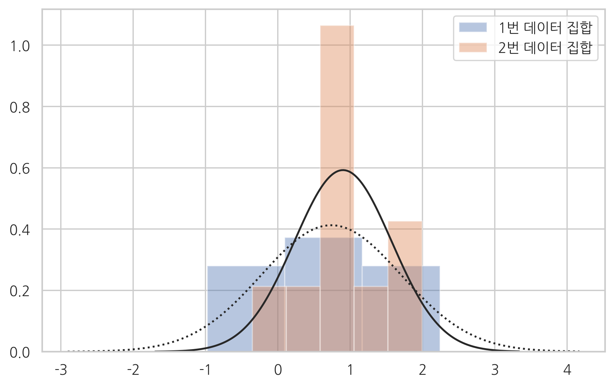
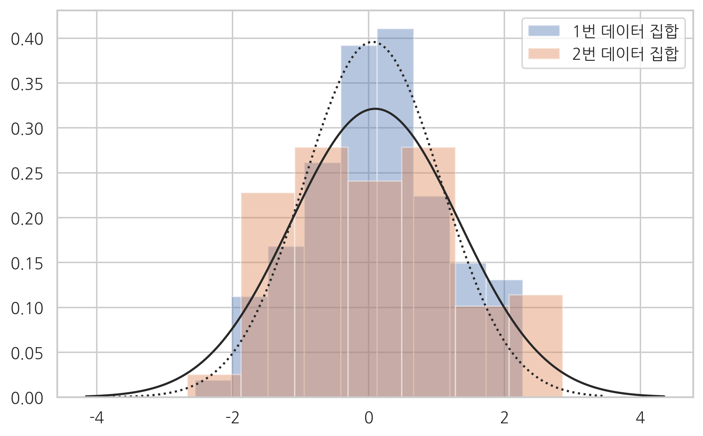

N = 10
mu_0 = 0.5
np.random.seed(0)
x = sp.stats.bernoulli(mu_0).rvs(N)
n = np.count_nonzero(x)
n
7
sp.stats.binom_test(n, N)
0.3437499999999999
N = 100
mu_0 = 0.5
np.random.seed(0)
x = sp.stats.bernoulli(mu_0).rvs(N)
n = np.count_nonzero(x)
n
49
sp.stats.binom_test(n, N)
0.9204107626128206
N = 100
mu_0 = 0.35
np.random.seed(0)
x = sp.stats.bernoulli(mu_0).rvs(N)
n = np.count_nonzero(x)
n
31
sp.stats.binom_test(n, N)
0.00018314322488235352
N = 10
K = 4
mu_0 = np.ones(K)/K
np.random.seed(0)
x = np.random.choice(K, N, p=mu_0)
n = np.bincount(x, minlength=K)
n
array([0, 3, 5, 2])
sp.stats.chisquare(n)
Power_divergenceResult(statistic=5.199999999999999, pvalue=0.157724450396663)
N = 100
K = 4
mu_0 = np.array([0.35, 0.30, 0.20, 0.15])
np.random.seed(0)
x = np.random.choice(K, N, p=mu_0)
n = np.bincount(x, minlength=K)
n
array([37, 32, 20, 11])
sp.stats.chisquare(n)
Power_divergenceResult(statistic=16.56, pvalue=0.0008703471978912127)
obs = np.array([[5, 15], [10, 20]])
sp.stats.chi2_contingency(obs)
(0.0992063492063492, 0.7527841326498471, 1, array([[ 6., 14.],
[ 9., 21.]]))
N = 10
mu_0 = 0
np.random.seed(0)
x = sp.stats.norm(mu_0).rvs(N)
x
array([ 1.76405235, 0.40015721, 0.97873798, 2.2408932 , 1.86755799,
-0.97727788, 0.95008842, -0.15135721, -0.10321885, 0.4105985 ])
def ztest_1samp(x, sigma2=1, mu=0):
z = (x.mean() - mu) / np.sqrt(sigma2/len(x))
return z, 2 * sp.stats.norm().sf(np.abs(z))
ztest_1samp(x)
(2.3338341854824276, 0.019604406021683538)
N = 100
mu_0 = 0
np.random.seed(0)
x = sp.stats.norm(mu_0).rvs(N)
ztest_1samp(x)
(0.5980801553448499, 0.5497864508624168)
N = 10
mu_0 = 0
np.random.seed(0)
x = sp.stats.norm(mu_0).rvs(N)
sp.stats.ttest_1samp(x, popmean=0)
Ttest_1sampResult(statistic=2.28943967238967, pvalue=0.04781846490857058)
N = 100
mu_0 = 0
np.random.seed(0)
x = sp.stats.norm(mu_0).rvs(N)
sp.stats.ttest_1samp(x, popmean=0)
Ttest_1sampResult(statistic=0.5904283402851698, pvalue=0.5562489158694675)
N_1 = 10
mu_1 = 0
sigma_1 = 1
N_2 = 10
mu_2 = 0.5
sigma_2 = 1
np.random.seed(0)
x1 = sp.stats.norm(mu_1, sigma_1).rvs(N_1)
x2 = sp.stats.norm(mu_2, sigma_2).rvs(N_2)
ax = sns.distplot(x1, kde=False, fit=sp.stats.norm, label="1번 데이터 집합")
ax = sns.distplot(x2, kde=False, fit=sp.stats.norm, label="2번 데이터 집합")
ax.lines[0].set_linestyle(":")
plt.legend()
plt.show()

np.mean(x1), np.mean(x2)
(0.7380231707288347, 0.9006460151624349)
sp.stats.ttest_ind(x1, x2, equal_var=False)
Ttest_indResult(statistic=-0.4139968526988655, pvalue=0.6843504889824326)
N_1 = 50
mu_1 = 0
sigma_1 = 1
N_2 = 100
mu_2 = 0.5
sigma_2 = 1
np.random.seed(0)
x1 = sp.stats.norm(mu_1, sigma_1).rvs(N_1)
x2 = sp.stats.norm(mu_2, sigma_2).rvs(N_2)
sp.stats.ttest_ind(x1, x2, equal_var=True)
Ttest_indResult(statistic=-2.6826951236616963, pvalue=0.008133970915722658)
N = 5
mu_1 = 0
mu_2 = 0.4
np.random.seed(1)
x1 = sp.stats.norm(mu_1).rvs(N)
x2 = x1 + sp.stats.norm(mu_2, 0.1).rvs(N)
ax = sns.distplot(x1, kde=False, fit=sp.stats.norm, label="1번 데이터 집합")
ax = sns.distplot(x2, kde=False, fit=sp.stats.norm, label="2번 데이터 집합")
ax.lines[0].set_linestyle(":")
plt.legend()
plt.show()

sp.stats.ttest_rel(x1, x2)
Ttest_relResult(statistic=-5.662482449248929, pvalue=0.0047953456833781305)
N1 = 100
N2 = 100
sigma_1 = 1
sigma_2 = 1.2
np.random.seed(0)
x1 = sp.stats.norm(0, sigma_1).rvs(N1)
x2 = sp.stats.norm(0, sigma_2).rvs(N2)
ax = sns.distplot(x1, kde=False, fit=sp.stats.norm, label="1번 데이터 집합")
ax = sns.distplot(x2, kde=False, fit=sp.stats.norm, label="2번 데이터 집합")
ax.lines[0].set_linestyle(":")
plt.legend()
plt.show()

x1.std(), x2.std()
(1.0078822447165796, 1.2416003969261071)
sp.stats.bartlett(x1, x2)
BartlettResult(statistic=4.253473837232266, pvalue=0.039170128783651344)
sp.stats.fligner(x1, x2)
FlignerResult(statistic=7.224841990409457, pvalue=0.007190150106748367)
sp.stats.levene(x1, x2)
LeveneResult(statistic=7.680708947679437, pvalue=0.0061135154970207925)
np.random.seed(0)
N1 = 50
N2 = 100
x1 = sp.stats.norm(0, 1).rvs(N1)
x2 = sp.stats.norm(0.5, 1.5).rvs(N2)
ax = sns.distplot(x1, kde=False, fit=sp.stats.norm, label="1번 데이터 집합")
ax = sns.distplot(x2, kde=False, fit=sp.stats.norm, label="2번 데이터 집합")
ax.lines[0].set_linestyle(":")
plt.legend()
plt.show()

sp.stats.ks_2samp(x1, x2)
Ks_2sampResult(statistic=0.23, pvalue=0.055507233643215415)